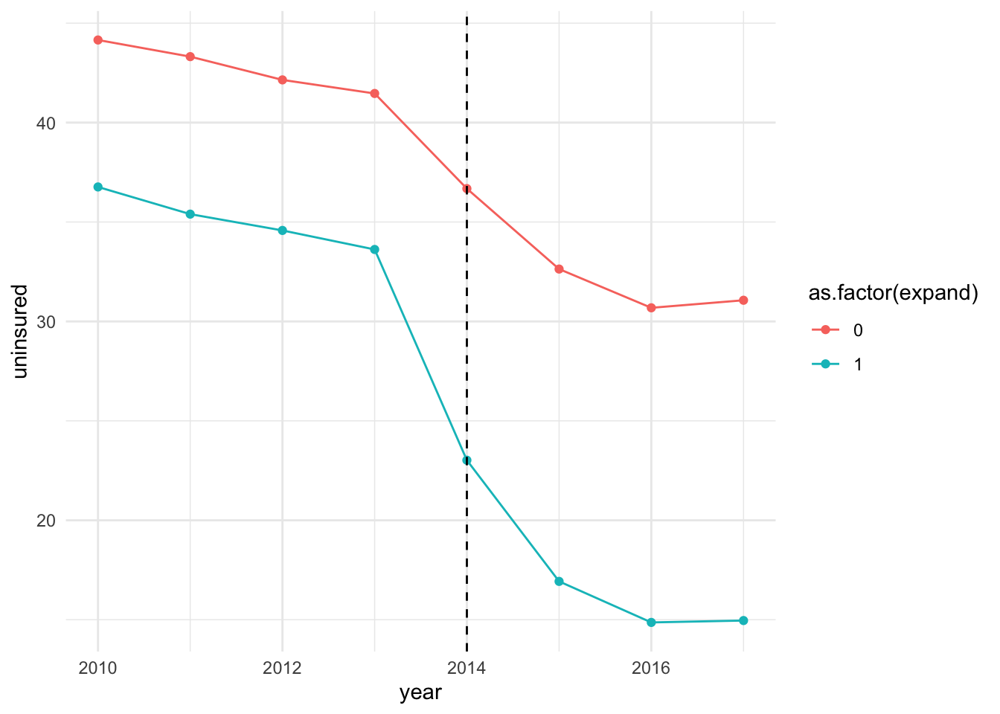
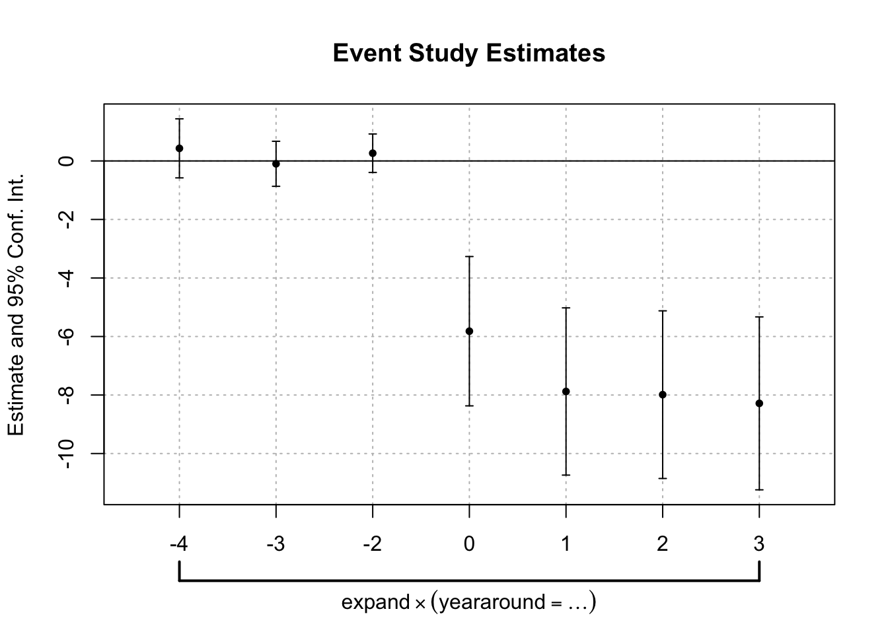

4.10 Event study model
As we have discussed, the validity of DiD estimate depends on the parallel trend assumption. Since the direct test for parallel trend requires the potential outcome of treated unit in absence of the treatment, it is not feasible. Although we are not going to be able to directly test the parallel trend, we can provide suggestive evidence in favor of (or lack of) parallel trend. For this, we need multi-period data, particularly for periods prior to the implementation of the treatment.
A simple way to assess parallel trend is to evaluate the unconditional means across the treated and untreated units (expansion and non-expansion states in our case). This is shown in Section 4 (DiD in multi-period set up). I’ve included the figure here.
f_uninsured
Here, we see that the uninsured rates between the expansion and non-expansion states trended similarly (or parallely) prior to the treatment. This allows us to argue that trends in uninsured rate would’ve remained similar (or would not differ systematically) in absence of the ACA-Medicaid reform. This by far is the simplest but yet powerful way to argue parallel trend assumption in practice. However, note that units in non-expansion states on average had higher uninsured rate compared to their counterparts in the expansion states even prior to the reform. Ideally, we would want treated and control units to have similar baseline features. This is where regression comes into play. Using regression, we can evaulate a difference-in-differences model by accounting for necessary covariates.9 Moreover, it allows us to evaluate dynamic effects of the treatment, i.e., the impacts of the treatment over time (1st period, 2nd period, and so on).
The event study model can be written as:
\[\begin{equation} \label{eq:DiD_eventstudy} Y_{it} = \alpha + \underbrace{\sum_{j = -k}^{k}}_{j \neq -1} \tau_j \times 1(\underbrace{t - G}_{r} = j) \times D_i + \sigma_{t} + \eta D_{i} + \epsilon_{it} \end{equation}\]
So what are these notations here?
\(\alpha\) is the intercept
\(1(\underbrace{t - G}_{r} = j)\): This is an indicator that turns on (takes the value 1) when the relative time \(r\) in the data is equal to \(j\), and turns off otherwise (takes the value 0). The relative time, \(r\), is simply the difference between the period \(t\) and the implementation year of the reform \(E\). For simplicity, I have the minimum and maximum of relative time as \(-k\) and \(k\), respectively. But of course, this can vary in practice. The omitted category is the year before the reform (i.e., when \(r = -1\)). We’ll discuss more about the omitted category later on.
\(\sigma_t\): Is the time fixed effects. It captures the changes that are common across treatment and control units over time.
\(D_i\): Is the fixed effects for treated/control units. In practice, treatment and control units can fundamentally differ in several characteristics. Accounting for \(D_i\) separately captures the average difference in the outcome between treatment and control units that does not change over time (time invariant). In other words, controling for \(D_i\) accounts for time invariant heterogeneity across the treatment vs. control groups. For example, we saw that expansion units on average had lower uninsured rate even prior to the reform compared to the treated units. For instance, this aspect of the difference in outcomes across the two groups is accounted by \(D_i\).
From a specification perspectice, the main difference between the canonical DiD specification and the event study specification is the incorporation of the term \(1(\underbrace{t - G}_{r} = j)\), which is interacted with the treatment indicator, \(D_i\). This allows us to evaluate the effect of the treatment separately for a given period following (or before) the treatment implementation. Such dynamic effects are picked up by \(\widehat{\tau_t}\).
Let’s try and break down whats going on in the event study specification.
First, it is important to realize the role of the omitted category. In the event study specification above, I’ve dropped the period prior to the reform. Note that this is essential from a theroretical standpoint, since inclusion of all periods would result to a fully saturated model and create multicollinearity.
Dropping the period prior to the treatment implementation uses this period as the relative period.
From point 2, we can think of the event-study specification as estimating several DiD type models, where the second difference is fixed and pertains to the omitted period, while the period of interest varies. Let me elaborate on this.
To see this, note that when \(t - G = -1\), the conditional expectation for the treated group is \(E(Y | D = 1, t = G - 1) = \alpha + \sigma_{(G-1)} + \eta\) and and for the control group is: \(E(Y | D = 0, G-1) = \alpha + \sigma_{(G-1)}\).
\(E(Y | D = 1, G - 1) - E(Y | D = 0, G-1)\) is synonymous to the second difference: i.e., the difference in conditional means between the treatment and control units in the period before the treatment implementation. For the first difference, let’s look at the relative period \(t - G = 0\), the period of the reform implementation. The conditional expectation for the treatment group is: \(E(Y | D = 1, t = G) = \alpha + \tau_0 + \sigma_{G} + \eta\) and that for the control group is: \(E(Y | D = 0, t = G) = \alpha + \sigma_{G}\). Here, the first difference is: \(E(Y | D = 1, t = G) - E(Y | D = 0, t = G)\).
The DiD estimand during the period of the reform, \(r=0\), is given as:
\[\begin{equation} \underbrace{E(Y | D = 1, t = G) - E(Y | D = 0, t = G)}_{first\; difference} - \underbrace{E(Y | D = 1, t = G - 1) - E(Y | D = 0, t = G-1)}_{second\; difference} = \tau_0 \end{equation}\]
The DiD estimand for the period following the reform \((r= 1)\) is given as:
\[\begin{equation} \underbrace{E(Y | D = 1, t = G+1) - E(Y | D = 0, t = G+1)}_{first\; difference} - \underbrace{E(Y | D = 1, t = G - 1) - E(Y | D = 0, t = G-1)}_{second\; difference} = \tau_1 \end{equation}\]
Similarly, we can think of the event study model as nesting the DiD estimation pertaining to the relative periods, \(r=2, \; 3\) and so on.
This way, the event study specification allows us to estimate period specific treatment effects from relative time period \(-k\) to \(k\) in relation to the conditional mean difference between the treated and control groups a period prior to the treatment implementation. Following the estimation of the event study model, we will have two sets of estimates: i) \(\tau_{-k}, \; \tau_{-k+1}, ..., \; \tau_{-2}\), and ii) \(\tau_{1}\), \(\tau_{2}\), …, \(\tau_{k}\). The estimation of \(\tau\)s prior to the treatment allows us to make inference regarding the parallel trend assumption. If \(\widehat{\tau}_j\) for \(j<-1\) is close to zero, then it provides suggestive evidence that the outcomes between the treatment and control units are trending similarly prior to the treatment.
Let’s estimate the event study model for the ACA-Medicaid data. Note that we are using the larger data set where year spans from 2010 to 2018.
- First create the relative time variable.
mort_allcauses <- mort_allcauses %>%
mutate(yeararound = year - yearexpand)
# view
table(mort_allcauses$yeararound)##
## -4 -3 -2 -1 0 1 2 3
## 2828 2824 2825 2827 2827 2827 2821 2826- Note that the relative time spans from -4 to 3. Since, we are only considering the states that implemented ACA-Medicaid expansion in year 2014, -4 pertains to year 2010, -3 to 2011, and so on. Next, let’s create relative time indicators and interact them with the expansion status. In the model, this pertains to \(1(\underbrace{t - G}_{r} = j) \times D_i\) part.
mort_allcauses <- mort_allcauses %>%
mutate(rel_pre4 = ifelse(yeararound == -4, 1, 0), # indicator for r = -4
rel_pre4 = rel_pre4 * expand, # interact the indicator for r = -4 with expansion status
rel_pre3 = ifelse(yeararound == -3, 1, 0),
rel_pre3 = rel_pre3 * expand,
rel_pre2 = ifelse(yeararound == -2, 1, 0),
rel_pre2 = rel_pre2 * expand,
rel_pre1 = ifelse(yeararound == -1, 1, 0),
rel_pre1 = rel_pre1 * expand,
rel_post0 = ifelse(yeararound == 0, 1, 0),
rel_post0 = rel_post0 * expand,
rel_post1 = ifelse(yeararound == 1, 1, 0),
rel_post1 = rel_post1 * expand,
rel_post2 = ifelse(yeararound == 2, 1, 0),
rel_post2 = rel_post2 * expand,
rel_post3 = ifelse(yeararound == 3, 1, 0),
rel_post3 = rel_post3 * expand)- Now thats done, let’s specify the model and estimate it using OLS.
# quick look at the data
head(mort_allcauses)## # A tibble: 6 × 16
## countyfips year state.abb expand yearexpand sahieunins138 GovernorisDemocrat1Yes yeararound rel_pre4 rel_pre3
## <dbl> <dbl> <chr> <dbl> <dbl> <dbl> <int> <dbl> <dbl> <dbl>
## 1 1001 2010 AL 0 2014 40.6 0 -4 0 0
## 2 1001 2011 AL 0 2014 41.6 0 -3 0 0
## 3 1001 2012 AL 0 2014 39.6 0 -2 0 0
## 4 1001 2013 AL 0 2014 39.6 0 -1 0 0
## 5 1001 2014 AL 0 2014 31.9 0 0 0 0
## 6 1001 2015 AL 0 2014 27.5 0 1 0 0
## # ℹ 6 more variables: rel_pre2 <dbl>, rel_pre1 <dbl>, rel_post0 <dbl>, rel_post1 <dbl>, rel_post2 <dbl>,
## # rel_post3 <dbl># specify the event study model
reg_es <- lm(sahieunins138 ~ rel_pre4 + rel_pre3 + rel_pre2 +
rel_post0 + rel_post1 + rel_post2 + rel_post3 +
factor(state.abb) +
factor(year),
data = mort_allcauses
)
# print summary of the results
summary(reg_es)##
## Call:
## lm(formula = sahieunins138 ~ rel_pre4 + rel_pre3 + rel_pre2 +
## rel_post0 + rel_post1 + rel_post2 + rel_post3 + factor(state.abb) +
## factor(year), data = mort_allcauses)
##
## Residuals:
## Min 1Q Median 3Q Max
## -22.6227 -3.3080 -0.3909 2.8382 22.5153
##
## Coefficients:
## Estimate Std. Error t value Pr(>|t|)
## (Intercept) 41.12501 0.24654 166.806 < 2e-16 ***
## rel_pre4 0.43065 0.27124 1.588 0.11236
## rel_pre3 -0.09744 0.27131 -0.359 0.71949
## rel_pre2 0.26399 0.27129 0.973 0.33052
## rel_post0 -5.81879 0.27126 -21.451 < 2e-16 ***
## rel_post1 -7.87920 0.27124 -29.049 < 2e-16 ***
## rel_post2 -7.98776 0.27138 -29.434 < 2e-16 ***
## rel_post3 -8.28500 0.27126 -30.543 < 2e-16 ***
## factor(state.abb)AR 2.56819 0.34884 7.362 1.87e-13 ***
## factor(state.abb)AZ -0.36864 0.53905 -0.684 0.49406
## factor(state.abb)CA -2.08319 0.36686 -5.678 1.38e-08 ***
## factor(state.abb)CO -0.21062 0.35968 -0.586 0.55817
## factor(state.abb)CT -10.20489 0.68943 -14.802 < 2e-16 ***
## factor(state.abb)DE -8.94031 1.06539 -8.392 < 2e-16 ***
## factor(state.abb)FL 4.55616 0.30746 14.819 < 2e-16 ***
## factor(state.abb)GA 6.79004 0.25928 26.188 < 2e-16 ***
## factor(state.abb)HI -13.89239 0.93335 -14.884 < 2e-16 ***
## factor(state.abb)IA -8.67819 0.33384 -25.995 < 2e-16 ***
## factor(state.abb)ID 5.41830 0.34531 15.691 < 2e-16 ***
## factor(state.abb)IL -7.21457 0.33243 -21.702 < 2e-16 ***
## factor(state.abb)KS -0.24081 0.27825 -0.865 0.38680
## factor(state.abb)KY -3.25760 0.32535 -10.013 < 2e-16 ***
## factor(state.abb)MA -21.15043 0.55287 -38.256 < 2e-16 ***
## factor(state.abb)MD -7.38614 0.45980 -16.064 < 2e-16 ***
## factor(state.abb)ME -9.17346 0.49516 -18.526 < 2e-16 ***
## factor(state.abb)MI -5.82545 0.34295 -16.986 < 2e-16 ***
## factor(state.abb)MN -12.83729 0.34039 -37.714 < 2e-16 ***
## factor(state.abb)MO -0.34838 0.27350 -1.274 0.20275
## factor(state.abb)MS 4.11382 0.29357 14.013 < 2e-16 ***
## factor(state.abb)NC 3.46979 0.28095 12.350 < 2e-16 ***
## factor(state.abb)ND -2.67388 0.37311 -7.166 7.94e-13 ***
## factor(state.abb)NE -3.09839 0.28556 -10.850 < 2e-16 ***
## factor(state.abb)NH -3.10364 0.62940 -4.931 8.23e-07 ***
## factor(state.abb)NJ 1.53171 0.47986 3.192 0.00141 **
## factor(state.abb)NM 4.53961 0.41884 10.839 < 2e-16 ***
## factor(state.abb)NV 7.92988 0.51812 15.305 < 2e-16 ***
## factor(state.abb)NY -10.64965 0.36130 -29.476 < 2e-16 ***
## factor(state.abb)OH -5.42861 0.33978 -15.977 < 2e-16 ***
## factor(state.abb)OK 7.94963 0.29731 26.739 < 2e-16 ***
## factor(state.abb)OR -1.75628 0.40918 -4.292 1.78e-05 ***
## factor(state.abb)RI -7.25614 0.84428 -8.594 < 2e-16 ***
## factor(state.abb)SC 1.69597 0.34075 4.977 6.50e-07 ***
## factor(state.abb)SD -0.54719 0.30966 -1.767 0.07724 .
## factor(state.abb)TN -2.13244 0.28390 -7.511 6.07e-14 ***
## factor(state.abb)TX 14.46773 0.24455 59.160 < 2e-16 ***
## factor(state.abb)UT -0.19189 0.39555 -0.485 0.62760
## factor(state.abb)VA -1.06957 0.26702 -4.006 6.21e-05 ***
## factor(state.abb)VT -16.08079 0.55287 -29.086 < 2e-16 ***
## factor(state.abb)WA -1.59608 0.40083 -3.982 6.86e-05 ***
## factor(state.abb)WI -11.97572 0.30207 -39.645 < 2e-16 ***
## factor(state.abb)WV -2.60614 0.37019 -7.040 1.98e-12 ***
## factor(state.abb)WY 3.09814 0.43006 7.204 6.03e-13 ***
## factor(year)2011 -0.83040 0.17588 -4.721 2.36e-06 ***
## factor(year)2012 -2.02063 0.17585 -11.491 < 2e-16 ***
## factor(year)2013 -2.70561 0.17574 -15.395 < 2e-16 ***
## factor(year)2014 -7.48354 0.17580 -42.569 < 2e-16 ***
## factor(year)2015 -11.52848 0.17582 -65.568 < 2e-16 ***
## factor(year)2016 -13.47716 0.17593 -76.605 < 2e-16 ***
## factor(year)2017 -13.09156 0.17585 -74.447 < 2e-16 ***
## ---
## Signif. codes: 0 '***' 0.001 '**' 0.01 '*' 0.05 '.' 0.1 ' ' 1
##
## Residual standard error: 5.033 on 22546 degrees of freedom
## Multiple R-squared: 0.825, Adjusted R-squared: 0.8246
## F-statistic: 1833 on 58 and 22546 DF, p-value: < 2.2e-16- Let’s cluster the standard error at the state level. I’m going to do this using feols command from fixest package. Using feols you can automatically create the relative time indicators and interact them with the treatment status as in the coding below.
reg_es_cluster <- feols(sahieunins138 ~ i(yeararound, expand, ref = -1) | year + state.abb,
data = mort_allcauses, cluster = ~state.abb
)
summary(reg_es_cluster)## OLS estimation, Dep. Var.: sahieunins138
## Observations: 22,605
## Fixed-effects: year: 8, state.abb: 45
## Standard-errors: Clustered (state.abb)
## Estimate Std. Error t value Pr(>|t|)
## yeararound::-4:expand 0.430654 0.500730 0.860051 3.9442e-01
## yeararound::-3:expand -0.097442 0.381948 -0.255117 7.9982e-01
## yeararound::-2:expand 0.263994 0.326565 0.808399 4.2321e-01
## yeararound::0:expand -5.818789 1.266136 -4.595706 3.6185e-05 ***
## yeararound::1:expand -7.879198 1.417949 -5.556757 1.5057e-06 ***
## yeararound::2:expand -7.987764 1.421451 -5.619445 1.2195e-06 ***
## yeararound::3:expand -8.284998 1.466376 -5.649981 1.1003e-06 ***
## ---
## Signif. codes: 0 '***' 0.001 '**' 0.01 '*' 0.05 '.' 0.1 ' ' 1
## RMSE: 5.02671 Adj. R2: 0.824559
## Within R2: 0.127101We see that the relative time estimates from 3 and 2 are equal to one another. However, the clustered standard errors are inflated.
- We can then plot the event study estimates.
# Extract coefficients and confidence intervals
event_study_results <- fixest::coefplot(reg_es_cluster, main = "Event Study Estimates")
event_study_results[[1]]## estimate ci_low ci_high estimate_names estimate_names_raw id x
## yeararound::-4:expand 0.43065369 -0.5785019 1.4398093 yeararound::-4:expand yeararound::-4:expand 1 1
## yeararound::-3:expand -0.09744166 -0.8672076 0.6723243 yeararound::-3:expand yeararound::-3:expand 1 2
## yeararound::-2:expand 0.26399433 -0.3941533 0.9221419 yeararound::-2:expand yeararound::-2:expand 1 3
## yeararound::0:expand -5.81878875 -8.3705184 -3.2670591 yeararound::0:expand yeararound::0:expand 1 4
## yeararound::1:expand -7.87919826 -10.7368868 -5.0215097 yeararound::1:expand yeararound::1:expand 1 5
## yeararound::2:expand -7.98776439 -10.8525099 -5.1230189 yeararound::2:expand yeararound::2:expand 1 6
## yeararound::3:expand -8.28499809 -11.2402855 -5.3297107 yeararound::3:expand yeararound::3:expand 1 7
## y
## yeararound::-4:expand 0.43065369
## yeararound::-3:expand -0.09744166
## yeararound::-2:expand 0.26399433
## yeararound::0:expand -5.81878875
## yeararound::1:expand -7.87919826
## yeararound::2:expand -7.98776439
## yeararound::3:expand -8.28499809We see that the estimates on \(\tau_j\) for \(j<-1\) is close to zero and statistically insignificant at the conventional levels. This provides a suggestive evidence in favor of the parallel trend assumption. However, the estimates following the reform implementation drops drastically, demonstrating the reduction in uninsured rate due to the ACA-Medicaid expansion.
Again what is necessary is a subject to debate, which we will stay away from for now.↩︎